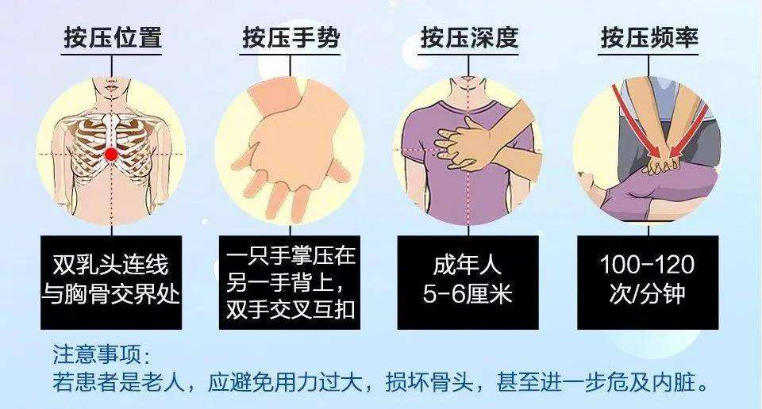
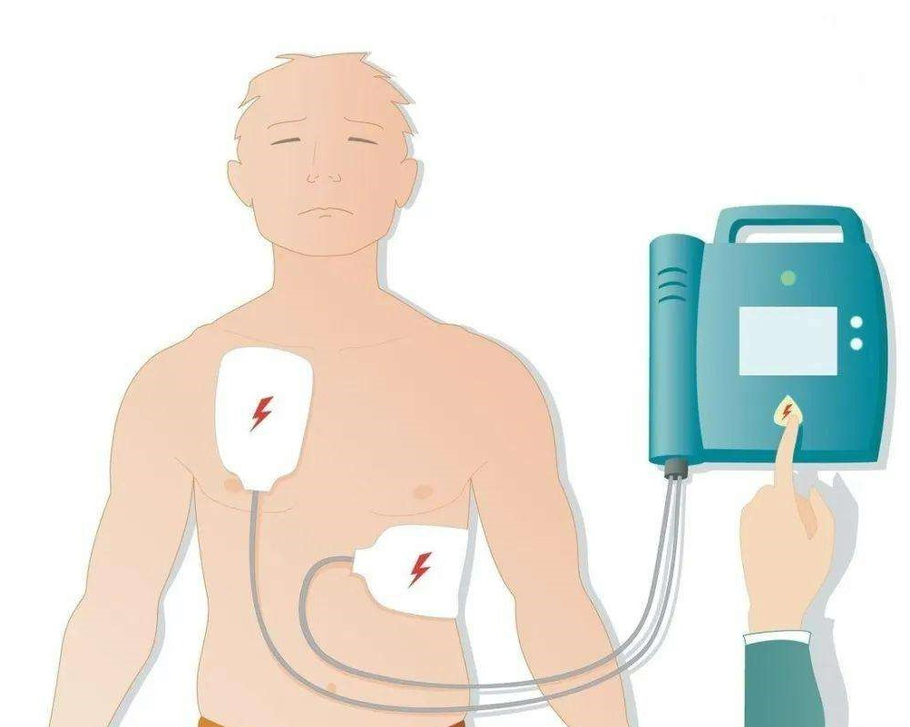

什么是心肺复苏?
心肺复苏是指针对呼吸和心博骤停所采取的紧急医疗措施，以人工呼吸代替病人的自主呼吸，以心脏按压形成暂时的人工循环并诱发心脏的自主搏动。 对非专业人员来说，如果发现有人突然神志消失或晕厥，可轻拍其肩部并大声呼叫，如无反应（无回答、无活动），没有呼吸或有不正常呼吸（如喘息），就应立即判断已发生心博骤停，立即呼叫急救中心，以争取时间获得专业人员的救助和得到电除颤器。如果有两人或两人以上在急救现场，一人立即开始胸外心脏按压，另一人打电话呼叫急救中心。突发性猝死的黄金救治时间是4-6分钟，超过6分钟，大脑会产生不可逆的伤害。10分钟以上，基本无法救治。
CPR stands for Cardiopulmonary Resuscitation. It is an emergency life-saving procedure that is done when someone's breathing or heartbeat has stopped. This may happen after an electric shock, heart attack, or drowning. Permanent brain damage or death can occur within minutes if blood flow stops. The best life saving time is between 4-6minutes, otherwise it will get the patient into a life-threatening situation. Therefore, it is very important that blood flow and breathing be continued until trained medical help arrives. If you know how to perform CPR, you could a life.
胸外心脏按压external chest compression：在胸壁外施压对心脏进行间接按压的办法，称为胸外心脏按压或闭式心脏按压。研究认为，胸外心脏按压时，胸腔内压力明显升高并传递到心内的心脏和血管，再传递到胸腔以外的大血管，驱使血液流动；按压解除时胸腔内压下降，静脉血回流到心脏，称为胸泵机制。主要操作正确，即能建立暂时的人工循环，动脉血压可达80~100mmHg，足以防止脑细胞的不可逆损害。
按压方法：
施行胸外按压时，病人必须平卧，背部可垫一木板或平卧于地板上。按压部位在胸骨下1/2处或剑突以上4~5cm处,男性为两乳头连线的中点。将一手掌根部置于按压点，另一手掌根部覆于前掌之上，手指向上方跷起，两臂伸直，凭自身重力通过双臂和双手掌，垂直向胸骨加压。按压时要有力而迅速，每次按压后应使胸廓完全恢复原位。按压频率为100-120次/分，按压深度5-6cm。按压过程中尽量避免因人工呼吸或电除颤而中断按压。
在心脏按压过程中，容易发生疲劳而影响心脏按压的频率和深度。因此，如果有两人以上进行心脏按压时，建议每2分钟（或5个按压呼吸周期）就交换一次。交换时，一人在病人旁按压，一人在对侧做替换准备，对方手掌一离开胸壁，另一方立即开始按压。心脏按压与人工呼吸的频率之比为30:2。
人工呼吸 在进行心肺复苏期间人工呼吸与心脏按压同样重要，尤其是因窒息导致心博骤停者，如儿童、溺水者。先进行30次心脏按压，再进行两次人工呼吸。
施行口对口人工呼吸时，应先保持呼吸道通畅。将患者头部往下倾斜，听听有无呼吸。若无正常呼吸，捏住患者鼻子并用嘴盖住患者的嘴吹气，吹到你看见患者的胸廓隆起。每次吹闭即将口移开，此时病人凭借胸廓的弹性收缩被动地自行完成呼气。进行人工呼吸时，每次送气时间应大于1秒。不能应人工呼吸而中断心脏按压。
幼儿CPR和成人相似，按压和吹气比例仍为30:2，但有以下3点不同：
1、如果孩子身旁只有你一人，在打电话求救之前，先进行2分钟CPR
2、用一只手的根部进行按压
3、按压深度为胸廓前后径1/3
AED （Automatic External Defibrillator）中文名称自动体外除颤仪，是一种便携式的医疗设备，它可以诊断特定的心律失常，并且给予电击除颤，是可被非专业人员使用的用于抢救心源性猝死患者的医疗设备。它可以经内置电脑分析是否需要予以电除颤。除颤过程中有语音提示和屏幕显示使操作更为简便易行。自动体外除颤仪对多数人来说，只需简单的培训便能操作。美国心脏病协会（AHA）认为，学用AED比学心肺复苏（CPR）更为简单。如果可以将CPR与AED设备结合使用进行急救，可以更高概率的挽救生命。
1、发现紧急情况，确认现场安全，在AED取到前，立即开始实施CPR操作步骤。
2、取回的路上，按绿色按钮开机，AED达到后立即完成CPR，准备电击。
3、根据指示分别将电极片放置于右侧锁骨下和左侧肋弓下缘，放置完毕后大声提醒周围人员不要接触患者。
4、系统判定心律，如系统判定需要电击，根据语音提示，按下放电按钮。
5、放电完毕后根据语音提示继续进行CPR，完成一组CPR后系统再次判断心律是否需要重复电击，直至恢复心跳或急救人员接手救治。
s注意事项
1、根据语音提示和电极片上的图示正确贴上电极片，注意区分左右 （电极片表面的塑料薄膜需要撕掉）；
2、患者身上有水时应用干毛巾等物品擦拭，胸毛较多的如有条件可将胸毛剃除；
3、患者身上较为明显的金属饰品要摘除 （如项链）；
4、置入式心脏起搏器可正常使用AED；
5、电击时一定要大声提醒周边人员勿与患者接触，确认患者未与金属制品接触（如座椅、扶手、置物柜、餐车等） ；
6、使用AED与CPR的原则是先到先使用，取到AED后即刻准备进行电击除颤；
7、电击完成后不要马上摘除电极片，立即根据语音提示进行CPR，完成一个循环再次系统判断是否需要电击，如此反复；
8、复苏成功后应将患者置于复苏体位。